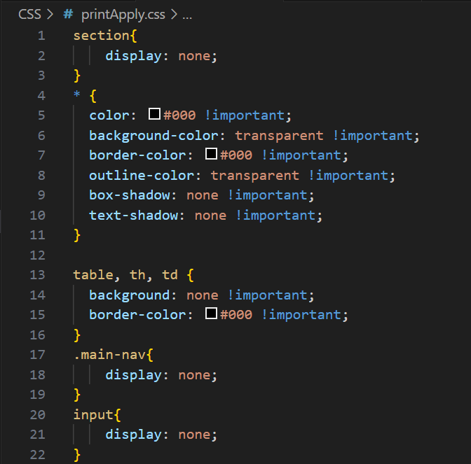

Intelligent Sensing Lab
Design page
Name:LIN Jingkai
- line 15-20: Use transition to make the changes when the mouse hovers more noticeable and smoother
- line 24-27: The effect when the mouse hovers over 'td' and add round corner
contact.css
- line 54-64: Use positioning 'fixed' to make the footer always stay at the bottom of the browser
common.css
I wrote the "printApply.css" file, but since JavaScript was not allowed to be used, I couldn't display my results by clicking the submit button.
However, after my testing, the code works effectively and it is located in the "CSS" folder.
